源码实验数：60；结果缺失实验数：0；严格单变量子组数：30。
Baseline: src/ink_starry_sky/Adam/002.py
| 脚本 | 变更参数 | 严格单变量 | ALPHA | BETA | BETA_1 | BETA_2 | GAMMA | STYLE_LAYERS | TV_FORMULA | INITIALIZATION | LEARNING_RATE | IMAGE_SIZE | NUM_STEPS | 最终加权总损失 |
|---|---|---|---|---|---|---|---|---|---|---|---|---|---|---|
| 002.py | BASELINE | — | 1 | — | 100 | 100 | 10 | [1, 6, 11, 20, 29] | L2(squared) | content | 0.02 | 1024x1024 | 150 | 202.653 |
| 003.py | BETA_1: 100→10 | ✅ | 1 | — | 10 | 100 | 10 | [1, 6, 11, 20, 29] | L2(squared) | content | 0.02 | 1024x1024 | 150 | 42.5627 |
| 004.py | GAMMA: 10→100 | ✅ | 1 | — | 100 | 100 | 100 | [1, 6, 11, 20, 29] | L2(squared) | content | 0.02 | 1024x1024 | 150 | 203.546 |
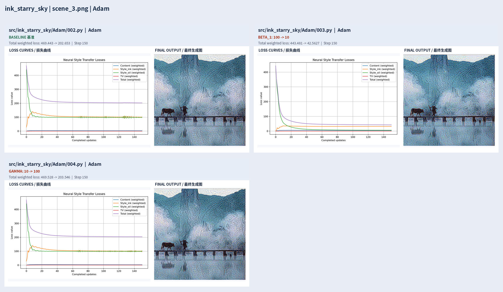
Baseline: src/ink_starry_sky/LBFGS/002.py
| 脚本 | 变更参数 | 严格单变量 | ALPHA | BETA | BETA_1 | BETA_2 | GAMMA | STYLE_LAYERS | TV_FORMULA | INITIALIZATION | LEARNING_RATE | IMAGE_SIZE | NUM_STEPS | 最终加权总损失 |
|---|---|---|---|---|---|---|---|---|---|---|---|---|---|---|
| 002.py | BASELINE | — | 1 | — | 100 | 100 | 10 | [1, 6, 11, 20, 29] | L2(squared) | content | 1 | 1024x1024 | 150 | 201.302 |
| 003.py | BETA_1: 100→10 | ✅ | 1 | — | 10 | 100 | 10 | [1, 6, 11, 20, 29] | L2(squared) | content | 1 | 1024x1024 | 150 | 40.8057 |
| 004.py | GAMMA: 10→100 | ✅ | 1 | — | 100 | 100 | 100 | [1, 6, 11, 20, 29] | L2(squared) | content | 1 | 1024x1024 | 150 | 202.066 |
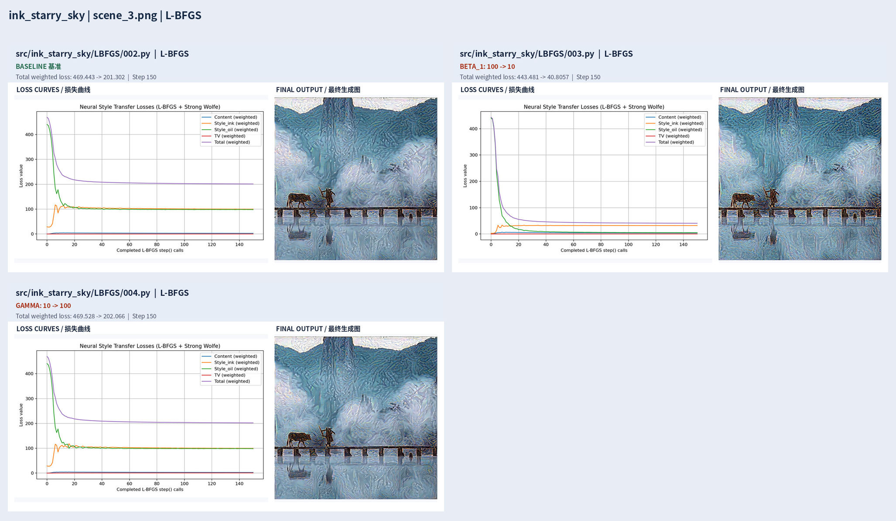
Baseline: src/ink_starry_sky/Adam/001.py
| 脚本 | 变更参数 | 严格单变量 | ALPHA | BETA | BETA_1 | BETA_2 | GAMMA | STYLE_LAYERS | TV_FORMULA | INITIALIZATION | LEARNING_RATE | IMAGE_SIZE | NUM_STEPS | 最终加权总损失 |
|---|---|---|---|---|---|---|---|---|---|---|---|---|---|---|
| 001.py | BASELINE | — | 1 | — | 100 | 100 | 10 | [1, 6, 11, 20, 29] | L2(squared) | content | 0.02 | 1024x1024 | 150 | 202.485 |
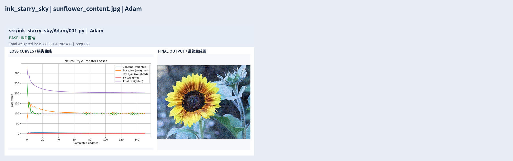
Baseline: src/ink_starry_sky/LBFGS/001.py
| 脚本 | 变更参数 | 严格单变量 | ALPHA | BETA | BETA_1 | BETA_2 | GAMMA | STYLE_LAYERS | TV_FORMULA | INITIALIZATION | LEARNING_RATE | IMAGE_SIZE | NUM_STEPS | 最终加权总损失 |
|---|---|---|---|---|---|---|---|---|---|---|---|---|---|---|
| 001.py | BASELINE | — | 1 | — | 100 | 10 | 10 | [1, 6, 11, 20, 29] | L2(squared) | content | 1 | 1024x1024 | 150 | 41.7514 |
Baseline: src/scene_ink/1/Adam/001.py
| 脚本 | 变更参数 | 严格单变量 | ALPHA | BETA | BETA_1 | BETA_2 | GAMMA | STYLE_LAYERS | TV_FORMULA | INITIALIZATION | LEARNING_RATE | IMAGE_SIZE | NUM_STEPS | 最终加权总损失 |
|---|---|---|---|---|---|---|---|---|---|---|---|---|---|---|
| 001.py | BASELINE | — | 1 | 100 | — | — | 10 | [1, 6, 11, 20, 29] | L2(squared) | content | 0.02 | 1024x1024 | 150 | 6.43331 |
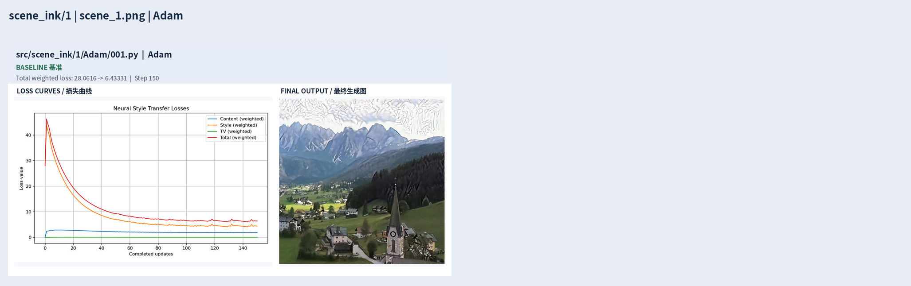
Baseline: src/scene_ink/1/LBFGS/001.py
| 脚本 | 变更参数 | 严格单变量 | ALPHA | BETA | BETA_1 | BETA_2 | GAMMA | STYLE_LAYERS | TV_FORMULA | INITIALIZATION | LEARNING_RATE | IMAGE_SIZE | NUM_STEPS | 最终加权总损失 |
|---|---|---|---|---|---|---|---|---|---|---|---|---|---|---|
| 001.py | BASELINE | — | 1 | 100 | — | — | 10 | [1, 6, 11, 20, 29] | L2(squared) | content | 1 | 1024x1024 | 150 | 4.9612 |
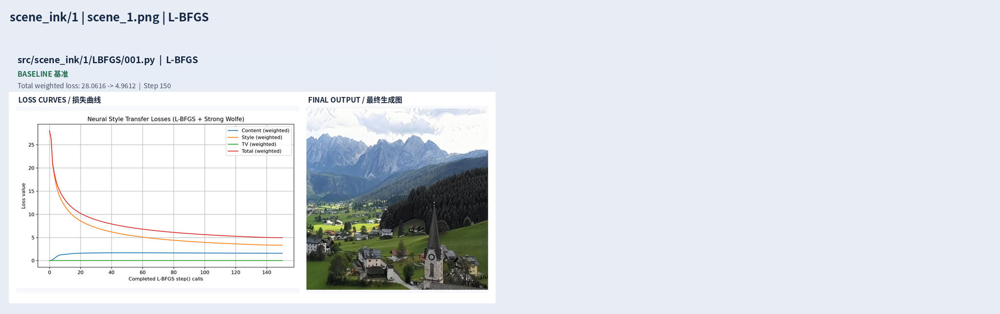
Baseline: src/scene_ink/2/Adam/001.py
Baseline: src/scene_ink/2/LBFGS/001.py
| 脚本 | 变更参数 | 严格单变量 | ALPHA | BETA | BETA_1 | BETA_2 | GAMMA | STYLE_LAYERS | TV_FORMULA | INITIALIZATION | LEARNING_RATE | IMAGE_SIZE | NUM_STEPS | 最终加权总损失 |
|---|---|---|---|---|---|---|---|---|---|---|---|---|---|---|
| 001.py | BASELINE | — | 1 | 100 | — | — | 10 | [1, 6, 11, 20, 29] | L2(squared) | content | 1 | 1024x1024 | 150 | 4.80968 |
| 002.py | BETA: 100→10 | ✅ | 1 | 10 | — | — | 10 | [1, 6, 11, 20, 29] | L2(squared) | content | 1 | 1024x1024 | 150 | 1.08066 |
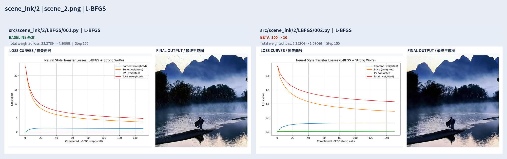
Baseline: src/scene_ink/3/Adam/001.py
| 脚本 | 变更参数 | 严格单变量 | ALPHA | BETA | BETA_1 | BETA_2 | GAMMA | STYLE_LAYERS | TV_FORMULA | INITIALIZATION | LEARNING_RATE | IMAGE_SIZE | NUM_STEPS | 最终加权总损失 |
|---|---|---|---|---|---|---|---|---|---|---|---|---|---|---|
| 001.py | BASELINE | — | 1 | 100 | — | — | 10 | [1, 6, 11, 20, 29] | L2(squared) | content | 0.02 | 1024x1024 | 150 | 6.11181 |
| 002.py | BETA: 100→10 | ✅ | 1 | 10 | — | — | 10 | [1, 6, 11, 20, 29] | L2(squared) | content | 0.02 | 1024x1024 | 150 | 1.39852 |
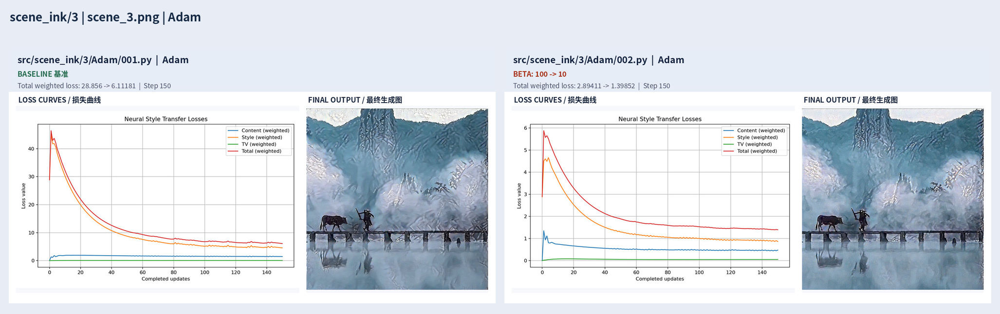
Baseline: src/scene_ink/3/LBFGS/001.py
| 脚本 | 变更参数 | 严格单变量 | ALPHA | BETA | BETA_1 | BETA_2 | GAMMA | STYLE_LAYERS | TV_FORMULA | INITIALIZATION | LEARNING_RATE | IMAGE_SIZE | NUM_STEPS | 最终加权总损失 |
|---|---|---|---|---|---|---|---|---|---|---|---|---|---|---|
| 001.py | BASELINE | — | 1 | 100 | — | — | 10 | [1, 6, 11, 20, 29] | L2(squared) | content | 1 | 1024x1024 | 150 | 5.55728 |
| 002.py | BETA: 100→10 | ✅ | 1 | 10 | — | — | 10 | [1, 6, 11, 20, 29] | L2(squared) | content | 1 | 1024x1024 | 150 | 1.22558 |
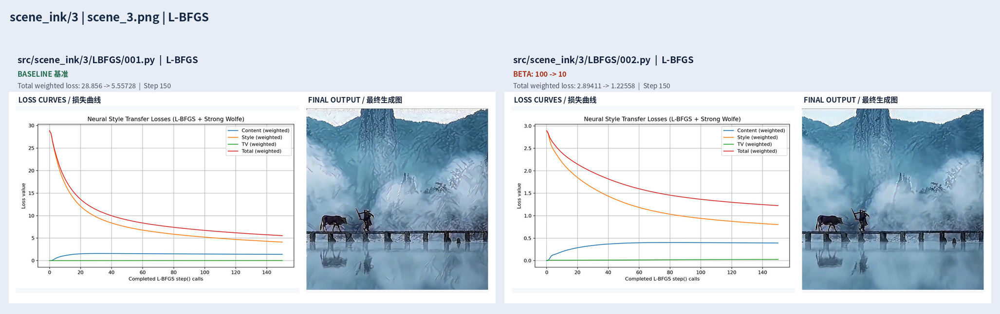
Baseline: src/starry_sky/1/Adam/001.py
| 脚本 | 变更参数 | 严格单变量 | ALPHA | BETA | BETA_1 | BETA_2 | GAMMA | STYLE_LAYERS | TV_FORMULA | INITIALIZATION | LEARNING_RATE | IMAGE_SIZE | NUM_STEPS | 最终加权总损失 |
|---|---|---|---|---|---|---|---|---|---|---|---|---|---|---|
| 001.py | BASELINE | — | 1 | 100 | — | — | 10 | [1, 6, 11, 20, 29] | L2(squared) | content | 0.02 | 1024x1024 | 150 | 5.97454 |
| 002.py | BETA: 100→10 | ✅ | 1 | 10 | — | — | 10 | [1, 6, 11, 20, 29] | L2(squared) | content | 0.02 | 1024x1024 | 150 | 2.29305 |
| 003.py | GAMMA: 10→100 | ✅ | 1 | 100 | — | — | 100 | [1, 6, 11, 20, 29] | L2(squared) | content | 0.02 | 1024x1024 | 150 | 7.02561 |
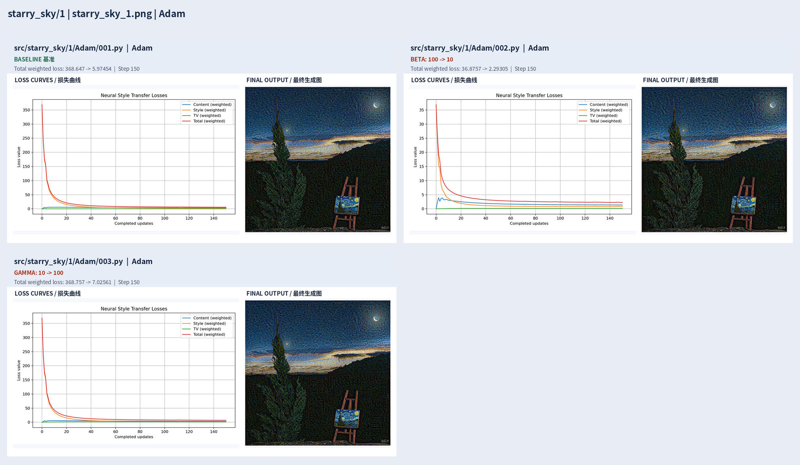
Baseline: src/starry_sky/1/LBFGS/001.py
| 脚本 | 变更参数 | 严格单变量 | ALPHA | BETA | BETA_1 | BETA_2 | GAMMA | STYLE_LAYERS | TV_FORMULA | INITIALIZATION | LEARNING_RATE | IMAGE_SIZE | NUM_STEPS | 最终加权总损失 |
|---|---|---|---|---|---|---|---|---|---|---|---|---|---|---|
| 001.py | BASELINE | — | 1 | 100 | — | — | 10 | [1, 6, 11, 20, 29] | L2(squared) | content | 1 | 1024x1024 | 150 | 4.83907 |
| 002.py | BETA: 100→10 | ✅ | 1 | 10 | — | — | 10 | [1, 6, 11, 20, 29] | L2(squared) | content | 1 | 1024x1024 | 150 | 2.15528 |
| 003.py | GAMMA: 10→100 | ✅ | 1 | 100 | — | — | 100 | [1, 6, 11, 20, 29] | L2(squared) | content | 1 | 1024x1024 | 150 | 5.90135 |
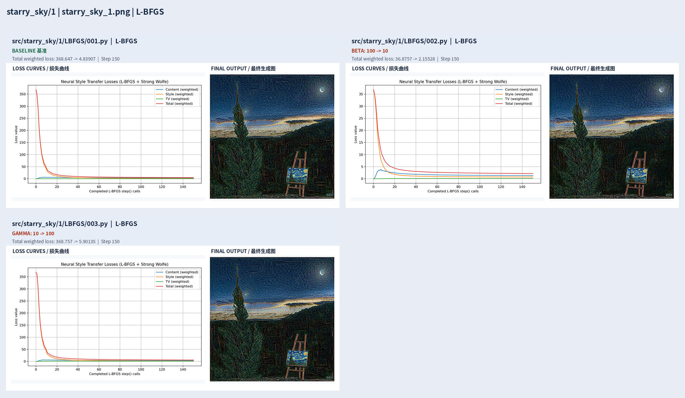
Baseline: src/starry_sky/2/Adam/001.py
| 脚本 | 变更参数 | 严格单变量 | ALPHA | BETA | BETA_1 | BETA_2 | GAMMA | STYLE_LAYERS | TV_FORMULA | INITIALIZATION | LEARNING_RATE | IMAGE_SIZE | NUM_STEPS | 最终加权总损失 |
|---|---|---|---|---|---|---|---|---|---|---|---|---|---|---|
| 001.py | BASELINE | — | 1 | 100 | — | — | 10 | [1, 6, 11, 20, 29] | L2(squared) | content | 0.02 | 1024x1024 | 150 | 7.30689 |
| 002.py | BETA: 100→10 | ✅ | 1 | 10 | — | — | 10 | [1, 6, 11, 20, 29] | L2(squared) | content | 0.02 | 1024x1024 | 150 | 3.09227 |
| 003.py | GAMMA: 10→100 | ✅ | 1 | 100 | — | — | 100 | [1, 6, 11, 20, 29] | L2(squared) | content | 0.02 | 1024x1024 | 150 | 8.62973 |
Baseline: src/starry_sky/2/LBFGS/001.py
| 脚本 | 变更参数 | 严格单变量 | ALPHA | BETA | BETA_1 | BETA_2 | GAMMA | STYLE_LAYERS | TV_FORMULA | INITIALIZATION | LEARNING_RATE | IMAGE_SIZE | NUM_STEPS | 最终加权总损失 |
|---|---|---|---|---|---|---|---|---|---|---|---|---|---|---|
| 001.py | BASELINE | — | 1 | 100 | — | — | 10 | [1, 6, 11, 20, 29] | L2(squared) | content | 1 | 1024x1024 | 150 | 5.81501 |
| 002.py | BETA: 100→10 | ✅ | 1 | 10 | — | — | 10 | [1, 6, 11, 20, 29] | L2(squared) | content | 1 | 1024x1024 | 150 | 2.8747 |
| 003.py | GAMMA: 10→100 | ✅ | 1 | 100 | — | — | 100 | [1, 6, 11, 20, 29] | L2(squared) | content | 1 | 1024x1024 | 150 | 6.97381 |
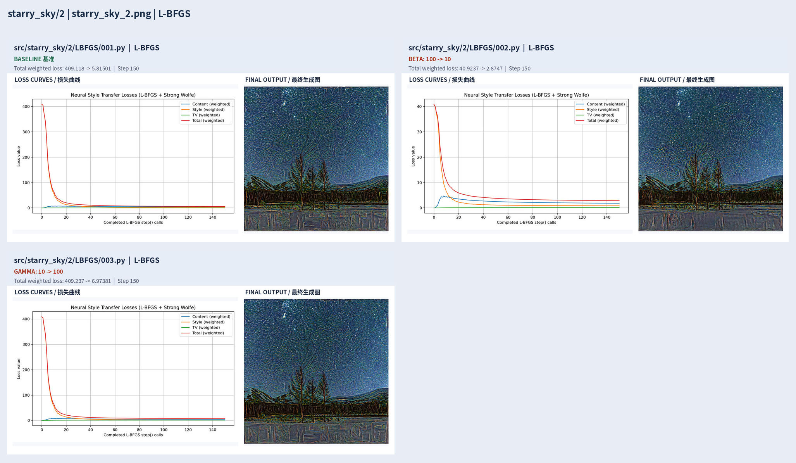
Baseline: src/starry_sky/3/Adam/001.py
| 脚本 | 变更参数 | 严格单变量 | ALPHA | BETA | BETA_1 | BETA_2 | GAMMA | STYLE_LAYERS | TV_FORMULA | INITIALIZATION | LEARNING_RATE | IMAGE_SIZE | NUM_STEPS | 最终加权总损失 |
|---|---|---|---|---|---|---|---|---|---|---|---|---|---|---|
| 001.py | BASELINE | — | 1 | 100 | — | — | 10 | [1, 6, 11, 20, 29] | L2(squared) | content | 0.02 | 1024x1024 | 150 | 7.30661 |
| 002.py | BETA: 100→10 | ✅ | 1 | 10 | — | — | 10 | [1, 6, 11, 20, 29] | L2(squared) | content | 0.02 | 1024x1024 | 150 | 3.10601 |
| 003.py | GAMMA: 10→100 | ✅ | 1 | 100 | — | — | 100 | [1, 6, 11, 20, 29] | L2(squared) | content | 0.02 | 1024x1024 | 150 | 8.60057 |
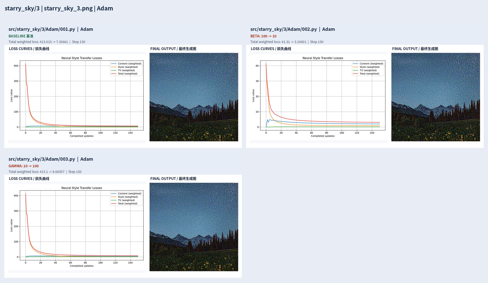
Baseline: src/starry_sky/3/LBFGS/001.py
| 脚本 | 变更参数 | 严格单变量 | ALPHA | BETA | BETA_1 | BETA_2 | GAMMA | STYLE_LAYERS | TV_FORMULA | INITIALIZATION | LEARNING_RATE | IMAGE_SIZE | NUM_STEPS | 最终加权总损失 |
|---|---|---|---|---|---|---|---|---|---|---|---|---|---|---|
| 001.py | BASELINE | — | 1 | 100 | — | — | 10 | [1, 6, 11, 20, 29] | L2(squared) | content | 1 | 1024x1024 | 150 | 5.69923 |
| 002.py | BETA: 100→10 | ✅ | 1 | 10 | — | — | 10 | [1, 6, 11, 20, 29] | L2(squared) | content | 1 | 1024x1024 | 150 | 2.84141 |
| 003.py | GAMMA: 10→100 | ✅ | 1 | 100 | — | — | 100 | [1, 6, 11, 20, 29] | L2(squared) | content | 1 | 1024x1024 | 150 | 6.79142 |
Baseline: src/sunflower_ink/Adam/001.py
| 脚本 | 变更参数 | 严格单变量 | ALPHA | BETA | BETA_1 | BETA_2 | GAMMA | STYLE_LAYERS | TV_FORMULA | INITIALIZATION | LEARNING_RATE | IMAGE_SIZE | NUM_STEPS | 最终加权总损失 |
|---|---|---|---|---|---|---|---|---|---|---|---|---|---|---|
| 001.py | BASELINE | — | 1 | 100 | — | — | 10 | [1, 6, 11, 20, 29] | L2(squared) | content | 0.02 | 1024x1024 | 150 | 7.62204 |
Baseline: src/sunflower_ink/LBFGS/001.py
| 脚本 | 变更参数 | 严格单变量 | ALPHA | BETA | BETA_1 | BETA_2 | GAMMA | STYLE_LAYERS | TV_FORMULA | INITIALIZATION | LEARNING_RATE | IMAGE_SIZE | NUM_STEPS | 最终加权总损失 |
|---|---|---|---|---|---|---|---|---|---|---|---|---|---|---|
| 001.py | BASELINE | — | 1 | 100 | — | — | 10 | [1, 6, 11, 20, 29] | L2(squared) | content | 1 | 1024x1024 | 150 | 7.55479 |
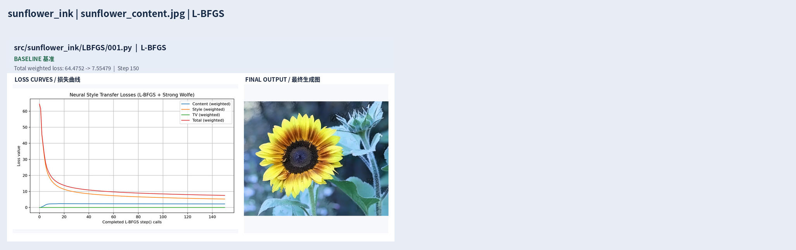
Baseline: src/sunflower_starry_sky/Adam/001.py
| 脚本 | 变更参数 | 严格单变量 | ALPHA | BETA | BETA_1 | BETA_2 | GAMMA | STYLE_LAYERS | TV_FORMULA | INITIALIZATION | LEARNING_RATE | IMAGE_SIZE | NUM_STEPS | 最终加权总损失 |
|---|---|---|---|---|---|---|---|---|---|---|---|---|---|---|
| 001.py | BASELINE | — | 1 | 100 | — | — | 10 | [1, 6, 11, 20, 29] | L2(squared) | content | 0.02 | 1024x1024 | 150 | 6.81129 |
| 002.py | STYLE_LAYERS: [1, 6, 11, 20, 29]→[20, 29] | ✅ | 1 | 100 | — | — | 10 | [20, 29] | L2(squared) | content | 0.02 | 1024x1024 | 150 | 8.21533 |
| 003.py | BETA: 100→200 | ✅ | 1 | 200 | — | — | 10 | [1, 6, 11, 20, 29] | L2(squared) | content | 0.02 | 1024x1024 | 150 | 8.35119 |
| 004.py | BETA: 100→50 | ✅ | 1 | 50 | — | — | 10 | [1, 6, 11, 20, 29] | L2(squared) | content | 0.02 | 1024x1024 | 150 | 4.84534 |
| 005.py | GAMMA: 10→50 | ✅ | 1 | 100 | — | — | 50 | [1, 6, 11, 20, 29] | L2(squared) | content | 0.02 | 1024x1024 | 150 | 7.31067 |
| 006.py | GAMMA: 10→100 | ✅ | 1 | 100 | — | — | 100 | [1, 6, 11, 20, 29] | L2(squared) | content | 0.02 | 1024x1024 | 150 | 8.24686 |
| 007.py | BETA: 100→10 | ✅ | 1 | 10 | — | — | 10 | [1, 6, 11, 20, 29] | L2(squared) | content | 0.02 | 1024x1024 | 150 | 2.53234 |
| 008.py | TV_FORMULA: L2(squared)→L1(abs) | ✅ | 1 | 100 | — | — | 10 | [1, 6, 11, 20, 29] | L1(abs) | content | 0.02 | 1024x1024 | 150 | 7.42285 |
| 009.py | BETA: 100→1, INITIALIZATION: content→zeros | ⚠️ 多变量 | 1 | 1 | — | — | 10 | [1, 6, 11, 20, 29] | L2(squared) | zeros | 0.02 | 1024x1024 | 150 | 1.38558 |
| 010.py | ALPHA: 1→10, BETA: 100→1, INITIALIZATION: content→zeros | ⚠️ 多变量 | 10 | 1 | — | — | 10 | [1, 6, 11, 20, 29] | L2(squared) | zeros | 0.02 | 1024x1024 | 150 | 3.84005 |
| 011.py | ALPHA: 1→100, BETA: 100→1, INITIALIZATION: content→zeros | ⚠️ 多变量 | 100 | 1 | — | — | 10 | [1, 6, 11, 20, 29] | L2(squared) | zeros | 0.02 | 1024x1024 | 150 | 23.3905 |
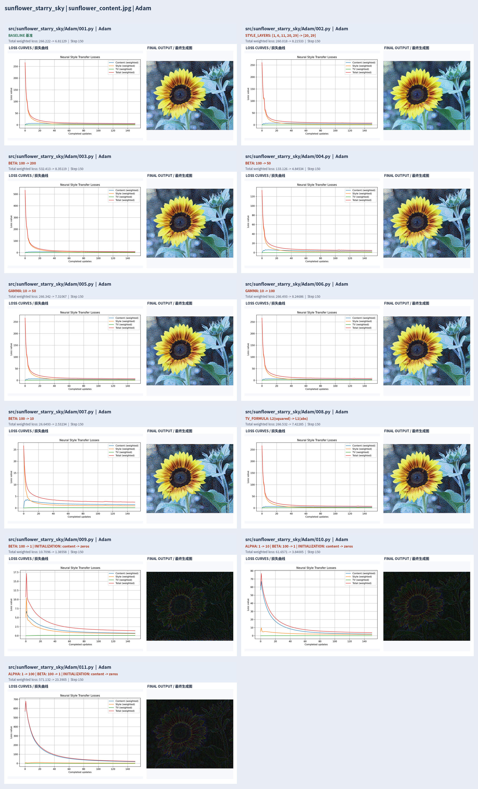
Baseline: src/sunflower_starry_sky/L-BFGS/001.py
| 脚本 | 变更参数 | 严格单变量 | ALPHA | BETA | BETA_1 | BETA_2 | GAMMA | STYLE_LAYERS | TV_FORMULA | INITIALIZATION | LEARNING_RATE | IMAGE_SIZE | NUM_STEPS | 最终加权总损失 |
|---|---|---|---|---|---|---|---|---|---|---|---|---|---|---|
| 001.py | BASELINE | — | 1 | 100 | — | — | 10 | [1, 6, 11, 20, 29] | L2(squared) | content | 1 | 1024x1024 | 150 | 5.51848 |
| 002.py | STYLE_LAYERS: [1, 6, 11, 20, 29]→[20, 29] | ✅ | 1 | 100 | — | — | 10 | [20, 29] | L2(squared) | content | 1 | 1024x1024 | 150 | 6.31471 |
| 003.py | BETA: 100→200 | ✅ | 1 | 200 | — | — | 10 | [1, 6, 11, 20, 29] | L2(squared) | content | 1 | 1024x1024 | 150 | 7.01204 |
| 004.py | BETA: 100→50 | ✅ | 1 | 50 | — | — | 10 | [1, 6, 11, 20, 29] | L2(squared) | content | 1 | 1024x1024 | 150 | 4.36969 |
| 005.py | GAMMA: 10→50 | ✅ | 1 | 100 | — | — | 50 | [1, 6, 11, 20, 29] | L2(squared) | content | 1 | 1024x1024 | 150 | 6.04406 |
| 006.py | GAMMA: 10→100 | ✅ | 1 | 100 | — | — | 100 | [1, 6, 11, 20, 29] | L2(squared) | content | 1 | 1024x1024 | 150 | 6.64678 |
| 007.py | BETA: 100→10 | ✅ | 1 | 10 | — | — | 10 | [1, 6, 11, 20, 29] | L2(squared) | content | 1 | 1024x1024 | 150 | 2.43601 |
| 008.py | TV_FORMULA: L2(squared)→L1(abs) | ✅ | 1 | 100 | — | — | 10 | [1, 6, 11, 20, 29] | L1(abs) | content | 1 | 1024x1024 | 150 | 6.4555 |
| 009.py | BETA: 100→1, TV_FORMULA: L2(squared)→signed_diff*2 [WARNING], INITIALIZATION: content→zeros | ⚠️ 多变量 | 1 | 1 | — | — | 10 | [1, 6, 11, 20, 29] | signed_diff*2 [WARNING] | zeros | 1 | 1024x1024 | 150 | 1.07458 |
| 010.py | ALPHA: 1→10, BETA: 100→1, TV_FORMULA: L2(squared)→signed_diff*2 [WARNING], INITIALIZATION: content→zeros | ⚠️ 多变量 | 10 | 1 | — | — | 10 | [1, 6, 11, 20, 29] | signed_diff*2 [WARNING] | zeros | 1 | 1024x1024 | 150 | 3.78011 |
| 011.py | ALPHA: 1→100, BETA: 100→1, TV_FORMULA: L2(squared)→signed_diff*2 [WARNING], INITIALIZATION: content→zeros | ⚠️ 多变量 | 100 | 1 | — | — | 10 | [1, 6, 11, 20, 29] | signed_diff*2 [WARNING] | zeros | 1 | 1024x1024 | 150 | 24.8014 |
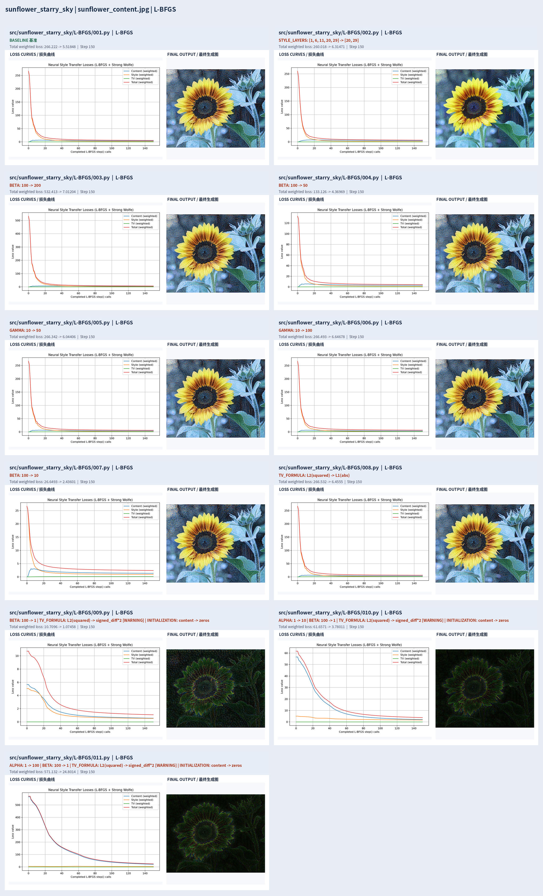
这些对比按照所有已识别参数的实际取值匹配，而不是凭文件名排列。
003.py=10, 002.py=100
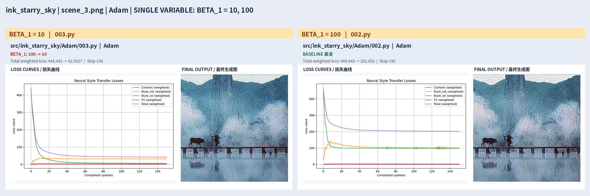
002.py=10, 004.py=100
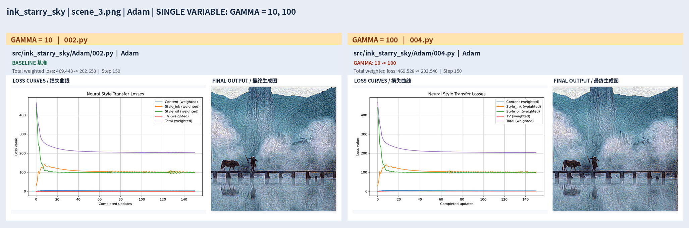
003.py=10, 002.py=100
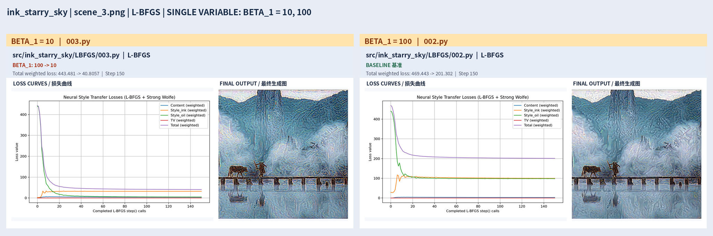
002.py=10, 004.py=100
002.py=10, 001.py=100
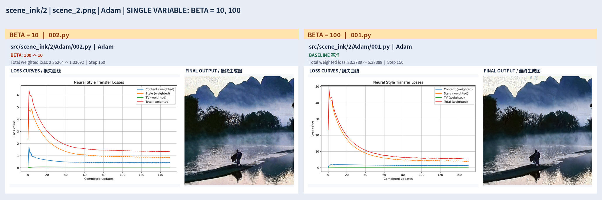
002.py=10, 001.py=100
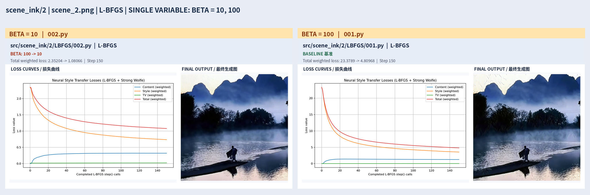
002.py=10, 001.py=100
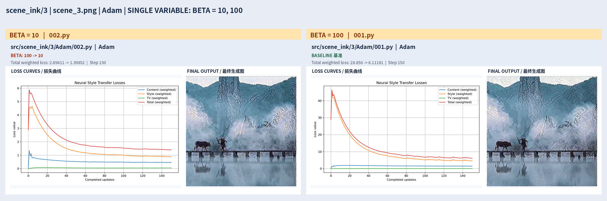
002.py=10, 001.py=100
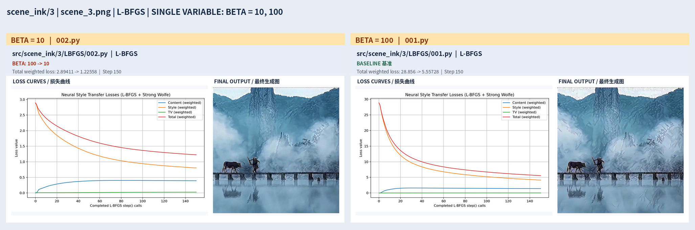
002.py=10, 001.py=100
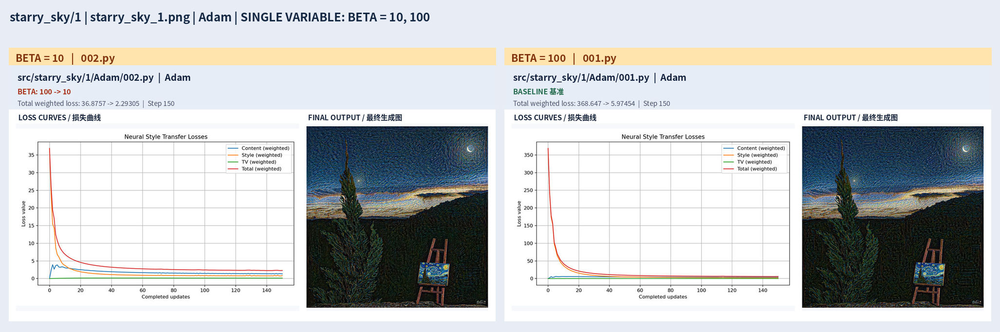
001.py=10, 003.py=100
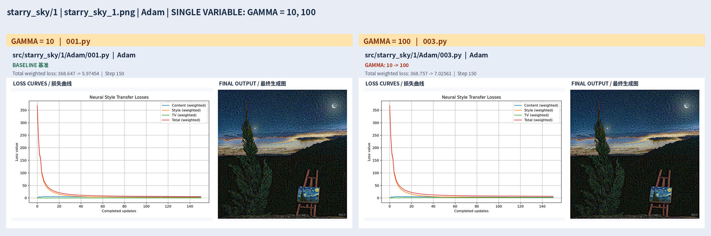
002.py=10, 001.py=100
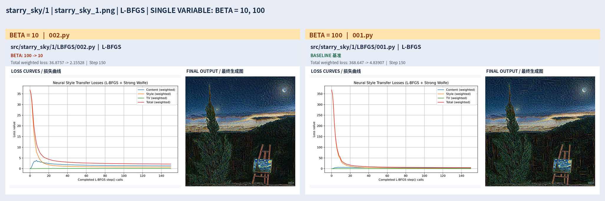
001.py=10, 003.py=100
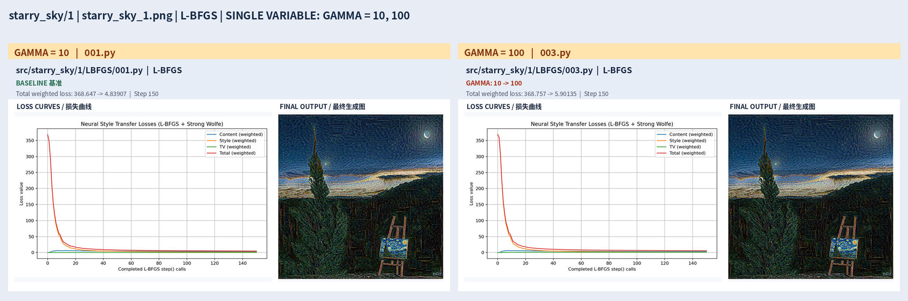
002.py=10, 001.py=100
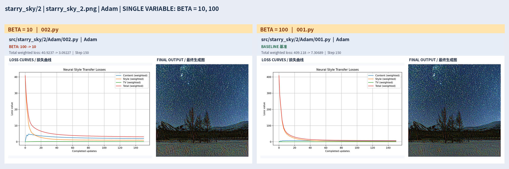
001.py=10, 003.py=100
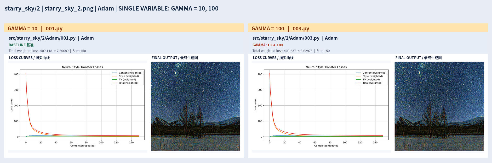
002.py=10, 001.py=100
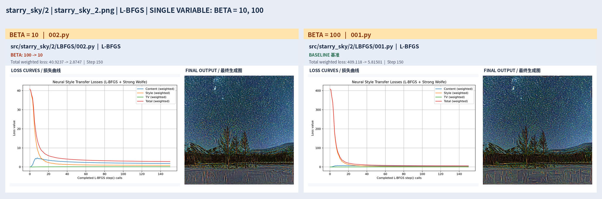
001.py=10, 003.py=100
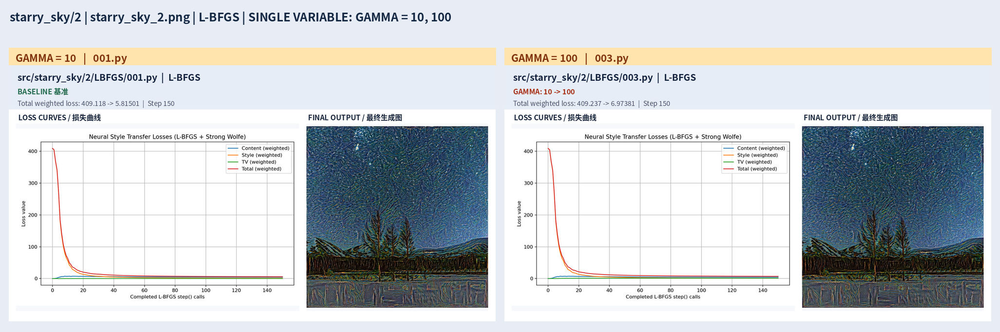
002.py=10, 001.py=100
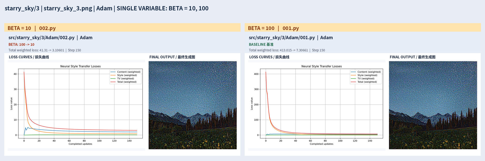
001.py=10, 003.py=100
002.py=10, 001.py=100
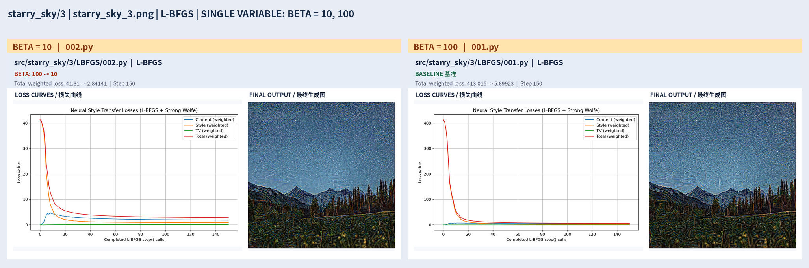
001.py=10, 003.py=100
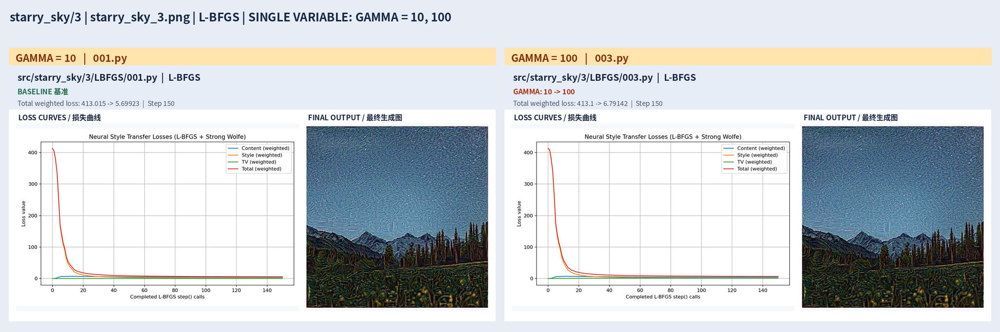
009.py=1, 010.py=10, 011.py=100
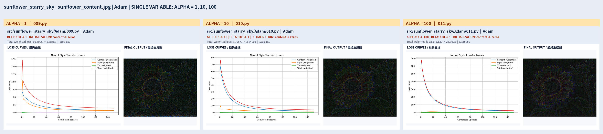
007.py=10, 004.py=50, 001.py=100, 003.py=200
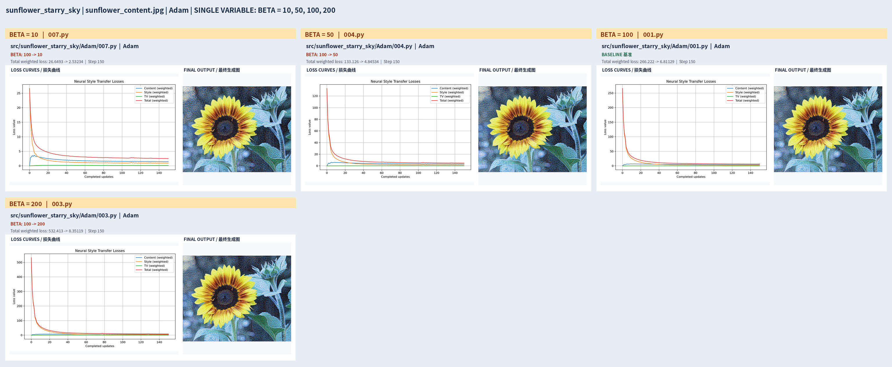
001.py=10, 005.py=50, 006.py=100
001.py=[1, 6, 11, 20, 29], 002.py=[20, 29]
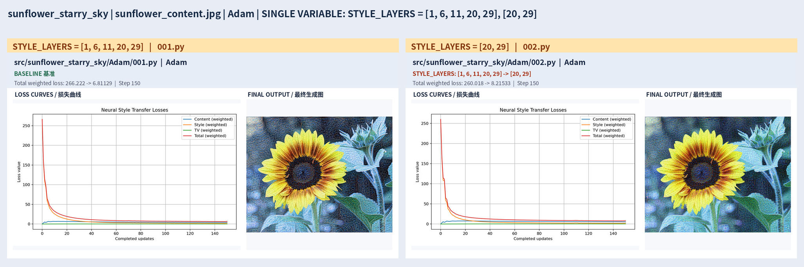
008.py=L1(abs), 001.py=L2(squared)
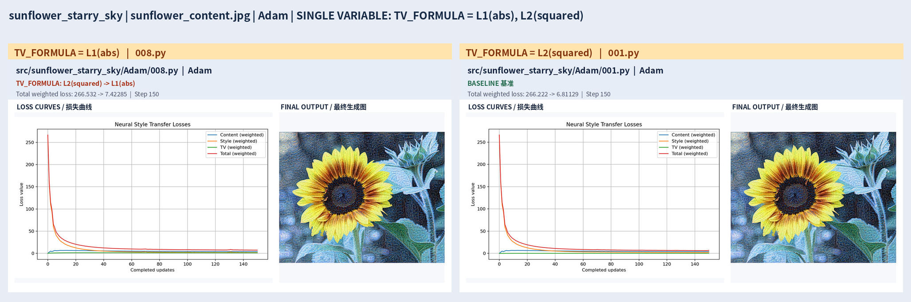
009.py=1, 010.py=10, 011.py=100
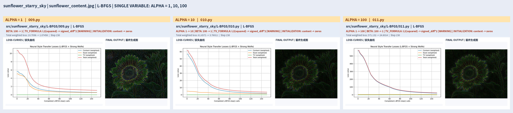
007.py=10, 004.py=50, 001.py=100, 003.py=200
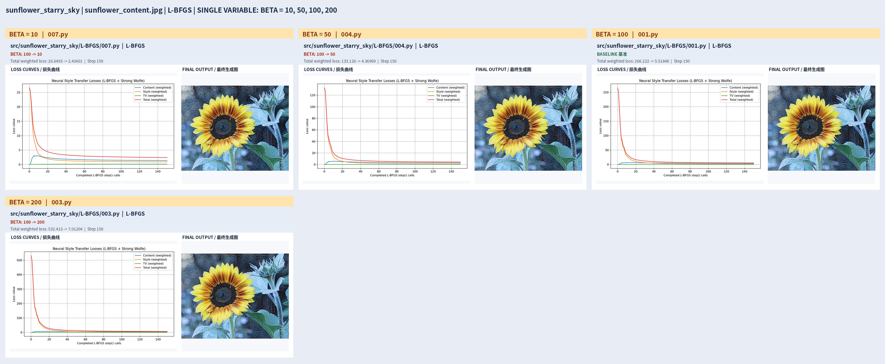
001.py=10, 005.py=50, 006.py=100
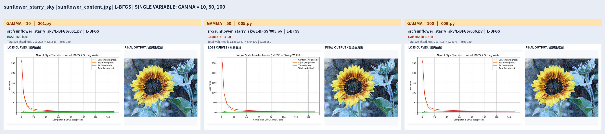
001.py=[1, 6, 11, 20, 29], 002.py=[20, 29]
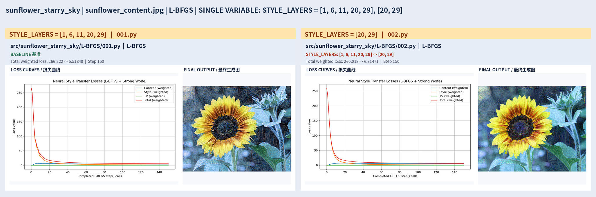
008.py=L1(abs), 001.py=L2(squared)
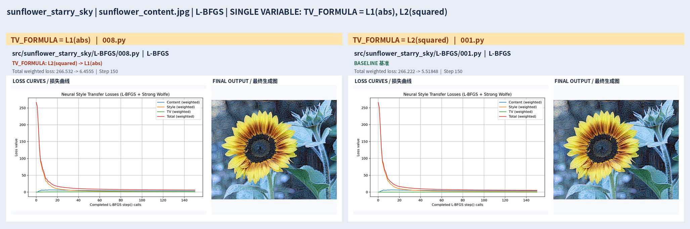